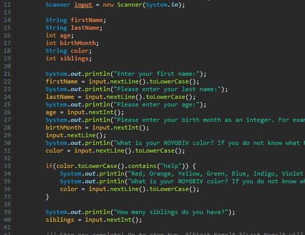

Fortune Teller
This is the very first project I worked on as a java developer. Using java, I was tasked with creating a fortune-teller application.
This is the very first project I worked on as a java developer. Using java, I was tasked with creating a fortune-teller application.
Using a long list of conditionals and applying concepts I learned regarding polymorphorism, I created a java application where the user is tasked with taking care of organic and robotic animals in a virtual pet shelter.
Using HTML and CSS, I was tasked with creating a reviews website for Star Trek movies. The Wrath of Khan is clearly the best Star Trek movie of all time.
I am currently a software development apprentice at We Can Code It. I will complete my term with We Can Code It before the end of this year.Prior to my apprenticeship I had 6 years of experience of working in communications and campaigns.
Most recently, I was the Director of Communication for a renewable energy company in Houston Texas. While there I wrote the company's public-facing copy as well as internal policy memos, I acted as it's liaison to government offices, organized events, and redesigned their website. Coding was one part of my prior jobs, and following my work at We Can Code It, I'd like to make it the primary focus of my career going forward.